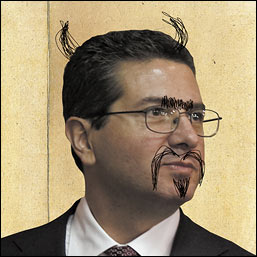
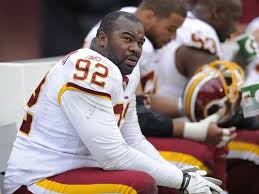
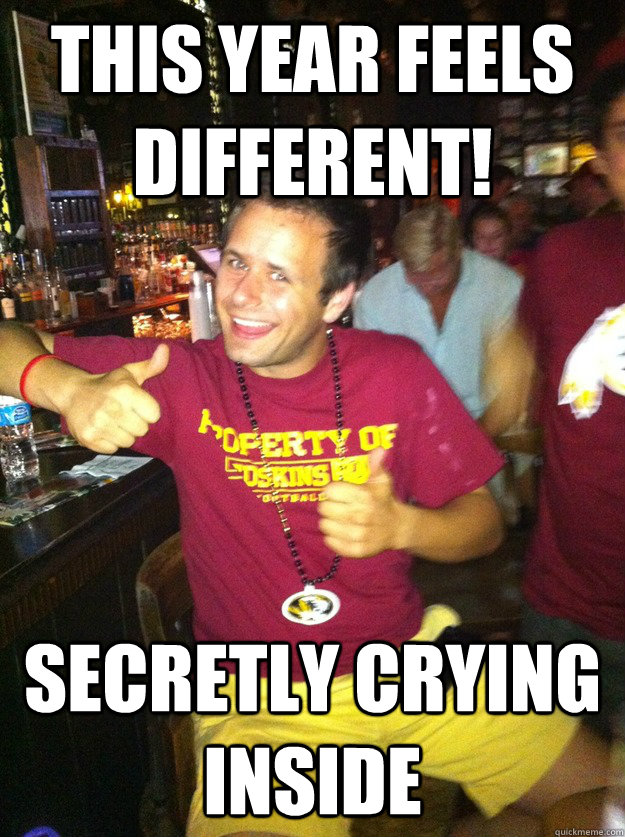
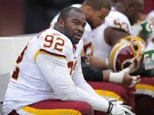
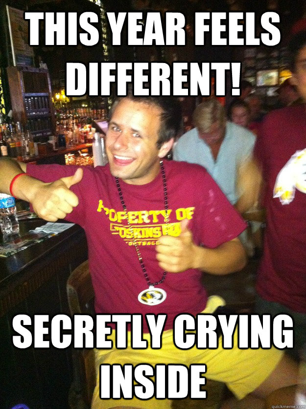

Washington Redskins: The Worst Team in America?

 



Summary
The Washington Redskins were first established in 1932, moving to the Washington, D.C. area in 1937. Although the Redskins achieved success in the late 1980's and early 1990's, the team has fallen on hard times particularly after its purchase by Dan Snyder. Dan Snyder has proved an extremely distasteful owner, having once given the Redskins staff bags of apples instead of their expected year-end holiday bonuses. Mr. Snyder has also proved inept at running the team, constantly replacing coaches and managerial staff with a complete lack of success.
Disastrous Recent Events in Redskins History
List of Redskins Starting Quarterbacks since 2000
| Kirk Cousins | 2015-2016 |
| Colt McCoy | 2015 |
| Robert Griffin III | 2012-2014 |
| Rex Grossman | 2011 |
| John Beck | 2011 |
| Donovan McNabb | 2010 |
| Jason Campbell | 2008-2009 |
| Todd Collins | 2007 |
| Mark Brunell | 2005-2006 |
| Patrick Ramsey | 2003-2004 |
| Tim Hasselback | 2003 |
| Shane Matthews | 2002 |
| Danny Wuerffel | 2002 |
| Tony Banks | 2001 |
| Jeff George | 2001 |
| Brad Johnson | 2000 |